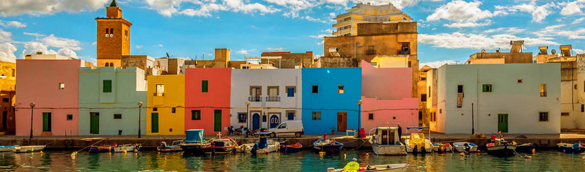
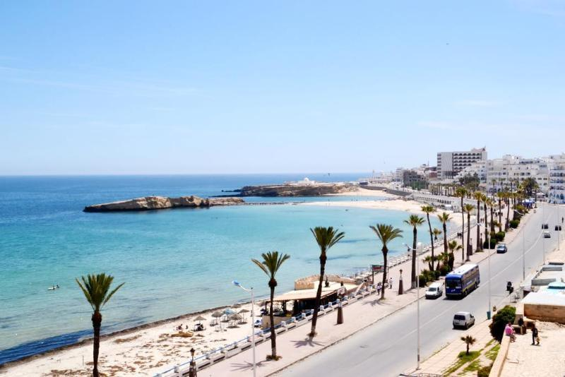
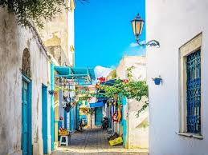
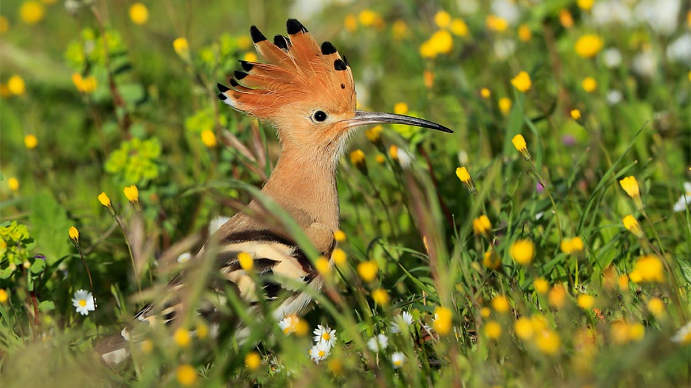
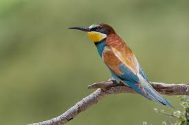
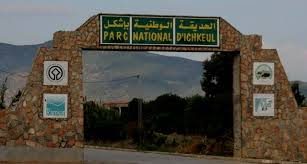
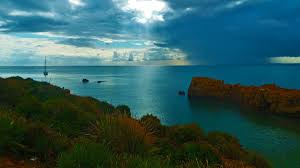
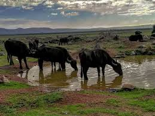

BIZERTE
La Perle du Nord - Entre Mer et Histoire
À propos de Bizerte
Bizerte est une ville côtière du nord de la Tunisie, située à environ 65 km au nord de Tunis. Connue pour ses magnifiques plages, son vieux port pittoresque et son riche patrimoine historique, Bizerte offre une expérience unique mêlant culture méditerranéenne et beauté naturelle.
Le vieux port de Bizerte est l'un des plus charmants de Tunisie, avec ses maisons colorées et ses cafés traditionnels. La ville possède également de superbes plages comme Rimel et Corniche, parfaites pour se détendre et profiter du soleil méditerranéen.
Top Places à Visiter
1. Le Vieux Port de Bizerte
Le cœur battant de la ville avec ses bateaux de pêche colorés, ses restaurants de poissons frais et son ambiance authentique. Idéal pour une promenade en soirée.

2. Fort d'Espagne
Une forteresse historique offrant une vue panoramique spectaculaire sur la ville et la mer. Construit au 16ème siècle, c'est un site incontournable pour les amateurs d'histoire.

3. Plage de la Corniche
Une magnifique plage de sable fin s'étendant sur plusieurs kilomètres. Parfaite pour la baignade, les sports nautiques et les pique-niques en famille.

4. Cap Blanc (Ras Angela)
Le point le plus septentrional de l'Afrique ! Un site naturel exceptionnel avec des falaises impressionnantes et des vues à couper le souffle sur la Méditerranée.

5. La Kasbah de Bizerte
La vieille ville fortifiée avec ses ruelles étroites, ses souks traditionnels et son architecture authentique. Un voyage dans le temps au cœur de la médina.

6. Ichkeul National Park
Parc national classé au patrimoine mondial de l'UNESCO, célèbre pour ses oiseaux migrateurs et sa biodiversité exceptionnelle. Paradis des ornithologues !





- El Ksiba: Vue sur le port, spécialités tunisiennes (agneau, brik aux fruits de mer), fruits de mer et poisson.
- Le Phénicien: Un bateau-restaurant sur le port, propose cuisine française, tunisienne et fruits de mer.
- Le Sport Nautique: Cuisine tunisienne, ambiance bord de mer.
- La Casa Coco Beach: Fruits de mer et méditerranéen, ambiance plage.
- Café Bondy : Café historique du vieux port avec une atmosphère unique. Endroit parfait pour déguster un café tunisien ou un thé à la menthe.
- Salon de Thé Délice : Pâtisseries orientales et françaises. Makroudh, baklava et gâteaux créatifs dans un cadre moderne et élégant.
- Café Glacier La Corniche : Vue spectaculaire sur la mer. Excellentes glaces artisanales, milkshakes et jus frais. Ambiance décontractée.
- Pâtisserie Le Palmier d'Or : Réputée pour ses gâteaux de mariage et ses pâtisseries orientales. Salon de thé cosy à l'étage.
- Coffee Shop Le Rivage : Coffee shop moderne avec WiFi gratuit. Café de spécialité, smoothies et brunchs. Décor contemporain et confortable.
- Salon de Thé Jasmina : Décoration authentique tunisienne. Thés parfumés, narguilé et pâtisseries maison dans une ambiance relaxante.